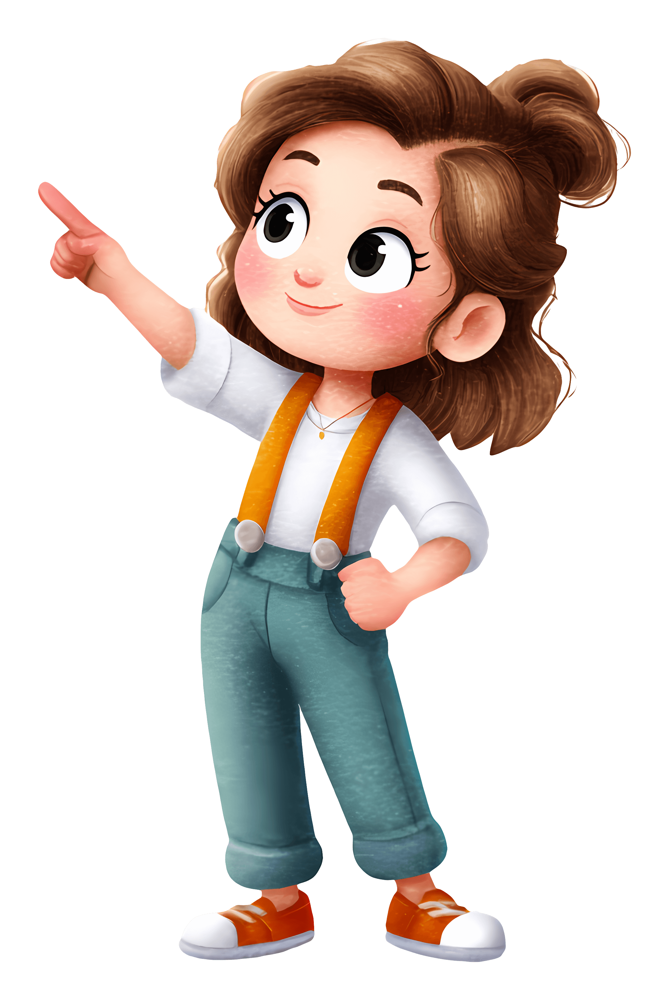
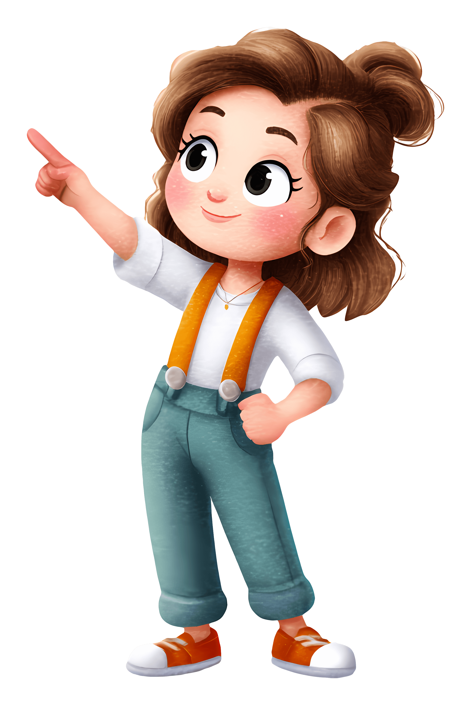

Welcome to our Teddy Bear World!
Discover the magic of teddy bears - those beloved companions that bring comfort, joy, and endless cuddles to children and adults alike. Our collection features the softest, most lovable teddy bears crafted with care and attention to detail
From classic brown bears to colorful friends, each teddy bear has its own personality and story. Whether you're looking for the perfect gift or adding to your collection, you'll find the ideal furry friend here.
Our teddy bears come in all shapes and sizes, from tiny pocket pals to oversized huggable friends perfect for snuggling on the couch. Each bear is made with soft fabrics, thoughtful stitching, and high quality stuffing to ensure they stay cuddly for years to come.
We believe that every teddy bear should bring a smile to someone's face, that's why we carefully design each one with unique touches, whether it's a sweet bow tie, a colorful scarf, or a heartwarming embroidered message.
Looking for a special occasion gift? We have bears for birthdays, baby showers, anniversaries, and holiday surprises. For collectors, our limited-edition bears are crafted with exquisite details and make timeless keepsakes for every generation.
At Teddy Bears World, we're passionate about creating lasting memories, one bear at a time. Take a moment to browse our collection and find your new best friend today- because everyone desrves a bear hug.

 
